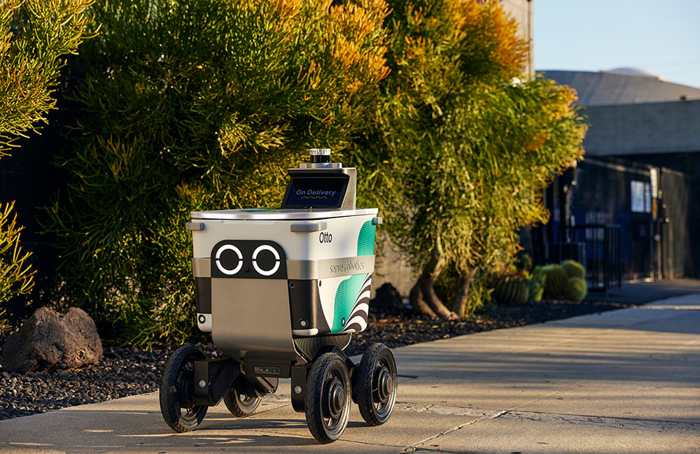

Revolutionizing Urban Logistics
Autonomous delivery robots are transforming last-mile logistics by offering efficient, scalable solutions for urban deliveries. These self-navigating machines rely on advanced hardware like high-resolution cameras, LiDAR, ultrasonic sensors, and GPS for real-time environmental perception and navigation.
Powered by electric motors and lithium-ion batteries, they achieve 4-6 mile ranges per charge, with NVIDIA's Jetson processors enabling real-time obstacle detection and path planning. The software stack includes machine learning for object recognition, simultaneous localization and mapping (SLAM) for navigation, and 4G/5G-enabled fleet management systems for route optimization.
By 2030, solid-state LiDAR and next-generation batteries, such as solid-state models, could extend ranges to 10-15 miles and reduce costs. Advanced AI may predict pedestrian behavior, while vehicle-to-everything (V2X) communication integrates robots with smart cities, and blockchain could secure delivery tracking. These robots cut delivery costs by up to 70% and reduce emissions, enhancing sustainability and access to goods.